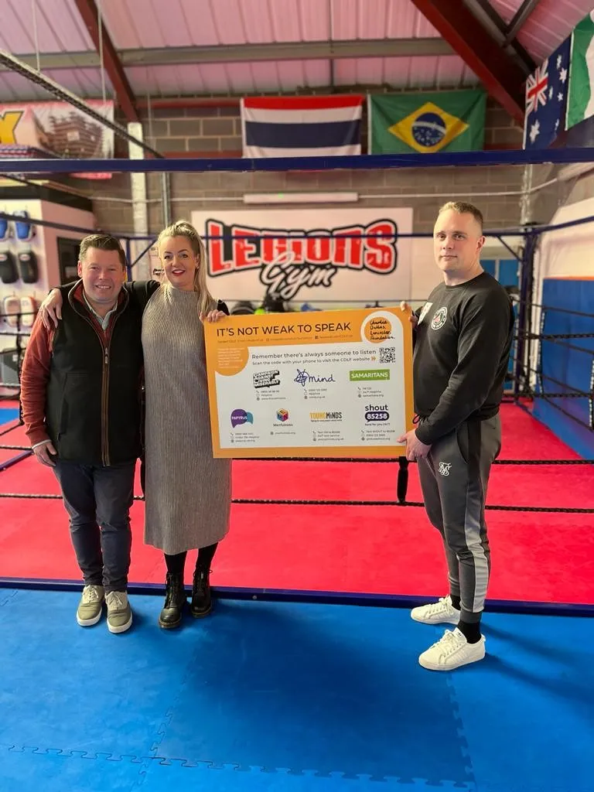

Our impact
Money raised in Charlie's name is given as grants to mental health and suicide prevention charities, and pays for support boards that point people towards help.
We always want to be transparent about exactly what happens to the money we raise.

What your support has done
Totals from June 2021 to 2026. The grant-by-grant list below currently covers June 2021 to 2023.
Grants we've made
Every grant from June 2021 to 2023, as published by the foundation. Grants from 2024 onwards will be added here.
| Date | Charity or service | Amount |
|---|---|---|
| 2023 | Private counselling services | £2,688.00 |
| October 2023 | Menfulness | £2,000.00 |
| December 2022 | The Jordan Legacy | £1,040.00 |
| September 2022 | Menfulness | £5,500.00 |
| September 2022 | YoungMinds | £860.00 |
| June 2022 | Menfulness | £2,000.00 |
| March 2022 | Menfulness | £1,605.00 |
| January 2022 | Menfulness | £1,000.00 |
| October 2021 | YoungMinds | £500.00 |
| June 2021 | York SASH | £10,206.86 |
| June 2021 | York Mind | £10,288.12 |
| Total | £37,687.98 | |
By charity
Rounded to the nearest pound.
Placeholder: to be updated by the trustees
Grants since 2023. The totals above run to 2026: 28 grants, £155,688. Please add the individual grants made after 2023 (date, charity, amount), including the four donations made in December 2023, so this list and the chart match the totals.
Support boards
In 2023 CDLF distributed 92 of our support boards.
The boards supply a network of organisations that provide support services to individuals struggling with their mental health. They also have a QR code that links you directly to a help page on our website, where you can find numbers to contact if you or someone you know is in crisis.
The boards are displayed in many different environments, from doctors' surgeries to gyms, sexual health clinics to classrooms, shopping malls and more.
Recent fundraising
Some of the money raised for the foundation by events and supporters, as reported in our news.
- November 2024£24,000
Raised at our Winter Ball at York Racecourse, sponsored by Persimmon, with nearly 250 guests.
- May 2025£7,296
Raised by Mark Karvounis, who rowed 41 miles for Charlie's birthday.
- June 2023£5,000
From Persimmon Homes' Community Champions scheme, presented at York Minster.
- Reported April 2023£1,650
Raised by JDW Fitness at their Hooded Horse 10k trail race.
- May 2024£1,500
From Barratt Homes Yorkshire East, to help raise awareness of mental health services in York and North Yorkshire.
These are amounts raised for the foundation, which are not the same as grants paid out.
Placeholder: wording to be approved by the trustees
How donations are used. The current website says: "Currently, 100% of our proceeds go to the wonderful charities we support." Please confirm the exact wording for the new site, including whether any running costs are covered separately.